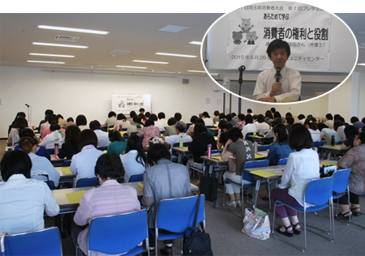

第51回埼玉県消費者大会実行委員会
5月26日(火)10時30分より、浦和コミュニティセンターにて、講師に池本誠司弁護士を迎え、｢あらためて学ぶ消費者の権利と役割｣をテーマに第1回プレ学習会が開催され、98人が参加しました。

埼玉県消費者大会は、50年の節目を超えて新たな一歩を踏み出しました。学習会では、憲法・法律から見る消費者の権利と消費者としての役割について学びました。
消費者基本法では、消費者の権利を尊重するとともに、消費者が自主的かつ合理的に行動できるようい消費者の自立を支援することを基本として行わなければならないとしています。
1962年のケネディ大統領の｢消費者の権利利益擁護に関する特別教書｣では、｢消費者の権利を実行するのに支障のないようにするのは政府の責任であるが、さらに責任を果たそうとするためには、立法並びに行政措置をとることが必要になってくる。そして、消費者の権利とは、 安全を求める権利
安全を求める権利 知らされる権利
知らされる権利 選ぶ権利
選ぶ権利 意見を聞いてもらう権利、の4項目としていること｣を説明しました。
意見を聞いてもらう権利、の4項目としていること｣を説明しました。
国民の基本的人権には、国から無用な干渉を受けない権利の｢自由権｣と個人の尊厳を確保するために国が積極的な講ずべき権利である｢社会権｣があります。消費者の権利は、消費者が自由に行使することを政府が不当に制限しないという意味の｢自由権｣はなく、消費者の権利が実現できるよう政府が積極的な責務を負う｢社会権｣です。国は、消費者の権利が実現できるように積極的な責務を負いますが、国だけに任せるのではなく、権利は国民の努力によって保持しなければいけないものであり、自ら行動する消費者になることが大切であること、また、憲法・法律の視点で現在議論されている集団的自衛権の問題も例にひきながら、消費者の役割についてお話されました。最後に｢消費者が集まり行動する消費者大会の役割は大きい｣と消費者への期待の言葉がありました。
□寄せられた感想(抜粋)
- 消費者の権利を守るためには、消費者の役割として声をあげて、行動することが大切であることを知ることができました。
- 消費者問題だけではなく、すべてのことが私たちのくらしに直接関わっていることを、あらためて認識しました。
- 法律のことだけでなく、日常生活に引きつけた内容をもう少し聞きたかった。
- 自ら行動する消費者になろうと言うフレーズが心に残りました。消費者として、国の動きに関心を持つことが大切であり、忘れてはいけないと感じました。
- 考えるだけでなく、それを意志表明すること、さらに行動で示すことが大切であることが良くわかりました。